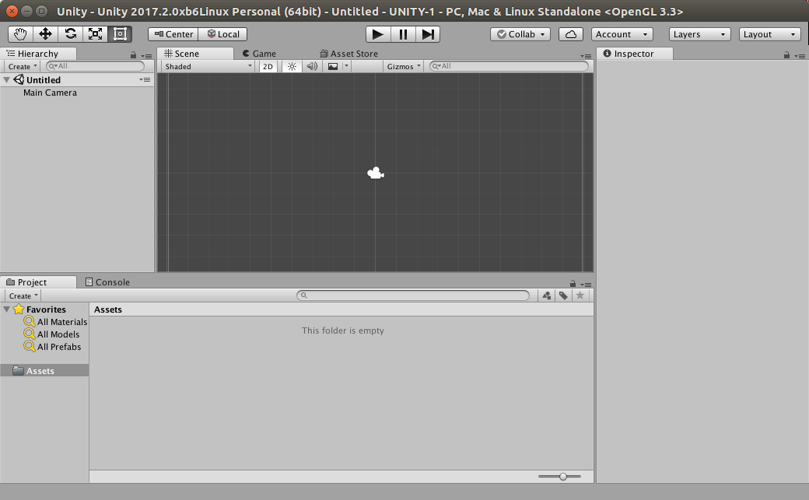

Unity を起動するとプロジェクトの選択ウィザードが表示されますので、ここでプロジェクトを新規作成することが出来ます。
なお新規作成画面で開発モードを 3D モードにするか 2D モードにするか選択可能です。
今回は 2D モードの方を選びます。
プロジェクトを新規作成すると 図1 のような画面が表示されます。
画面左上のエリアのことを「Hierarchy(ヒエラルキー)ウィンドウ」、
中央上のマス目が描いてあるエリアのことを「Scene(シーン)ビュー」、
右側のエリアの事を「Inspector(インスペクター)ウィンドウ」、
下側のエリアの事を「Project ウィンドウ」、
Project ウィンドウの右側パネルの事を「Assets(アセット)フォルダ」と言います。
他にも重要なエリアがありますが、必要になったらその都度説明します。

さて Unity ではタイトル画面やゲーム画面、ゲームオーバー画面などの各場面の事を「シーン」と呼び、それぞれの設定を異なるファイル(シーンファイルと呼びます)に保存する事が出来ます。
よって複数のシーンを用意することで、プログラマはゲーム中の適切なタイミングで各場面を切り替えることが可能になっています。
プロジェクト新規作成直後の Snene 画面にはデフォルトのシーンが表示されています。
ただデフォルトでは背景画像はありませんので、ここでは以下の手順で背景をセットしてみたいと思います(※)。
※ 今回は基本編なので、スクロール無しの 1 枚絵だけの表示とします。 スクロールさせたいなら自分で調べてみましょう。
背景画像を用意する。
Assets フォルダに背景画像を DnD すると画像が Asset として登録される(※)。
※ Unity で使う画像やソースなどのファイルの事を「Asset (アセット)」と呼びます。
登録した背景画像をさらに Assets フォルダ から Scene ビューに DnD するとその画像がオブジェクト化され(※)、Hierarchy ウィンドウにオブジェクト名、Inspector ウィンドウにオブジェクトの情報が表示される。
※ Unity ではインスタンスの事を「ゲームオブジェクト」と呼びますが、今回は簡単に「オブジェクト」とだけ書きます。
Inspector ウィンドウの Transform の Position の x と y に 0、z に 1 をセットする(※)。
※ z の値でオブジェクトの重なり具合を調節します。
(カメラの位置にも寄りますが)値が小さいほど他のオブジェクトの手前に表示されるようになります。
これで背景画像がオブジェクト化されて Scene ビューの中央に表示されましたので、次は実際のゲーム画面でどの様に表示されるのか確認してみます。
Scene ビューのタブの隣に「Game」というタブがあるのでそれをクリックして「Game ビュー」に切り替えてください。
Game ビューに表示されている画像が実際のゲームでも表示されます。
さて背景画像の形や大きさによっては Game ビューにピッタリ収まらないかもしれません。
その場合は以下の様にしてカメラを調整します。
まず画面比率を決める。Game ビューに切り替え、ビューの上部にある「Free Aspect」と書いてあるプルダウンメニューをクリックし、好みの比率を選択する。
Scene ビュー に切り替える。
(もし背景画像が見辛かったら) 左上にある手のひらボタンをクリックしてから Scene ビューをドラッグするとビューの表示位置を調整出来る。またマウスホイール上下でビューの表示を拡大縮小出来る。
Hierarchy ウィンドウの「Main Camera」をクリックすると Inspector ウィンドウにカメラ情報が表示される。また Scene ビューにプレビューが表示される。
Scene ビュー にカメラの撮影枠が表示されているので、枠の大きさをドラッグして調整する。
Game ビューに切り替えて実際の表示を確かめる。